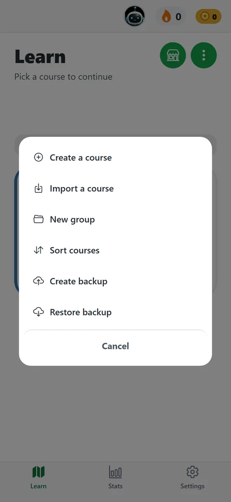

How to back up Yaaddi and move it to a new phone
Short answerOn the Learn tab, tap the three-dot menu and choose Create backup. Save the file somewhere safe. On the new phone, open the same menu, choose Restore backup and pick the file.
Steps
On the Learn tab, tap the three-dot button and choose Create backup. This option appears once you have at least one course.

Choose where to save or share the file, such as your cloud drive or an email to yourself.
On the new phone, install Yaaddi, open the same menu and choose Restore backup.
Pick the backup file and confirm. Yaaddi shows Restore complete when it has finished.
Good to know
- A backup holds your courses, progress, streak, Coins and settings.
- Restoring replaces the courses, stats and settings on the phone with what is in the file. Restore onto a new phone, or after a backup you are sure about.
- Yaaddi keeps no copy of your data, and Android's automatic cloud backup is turned off for the app. The file you create is the backup, so keep it somewhere you can reach.
- A backup over 100 MB cannot be restored later, and the app warns you. Delete courses you no longer need or share them one by one.
- Uninstalling the app or clearing its storage deletes your data from the phone.
Common questions
Where is the backup saved?
Wherever you choose when you create it. You are responsible for that copy.
Can I move only one course?
Yes. Use Export from the course menu to share a single course without your progress. See How to share a course.
Why is Create backup missing?
It needs at least one course. Restore backup is always available, even on a fresh install.